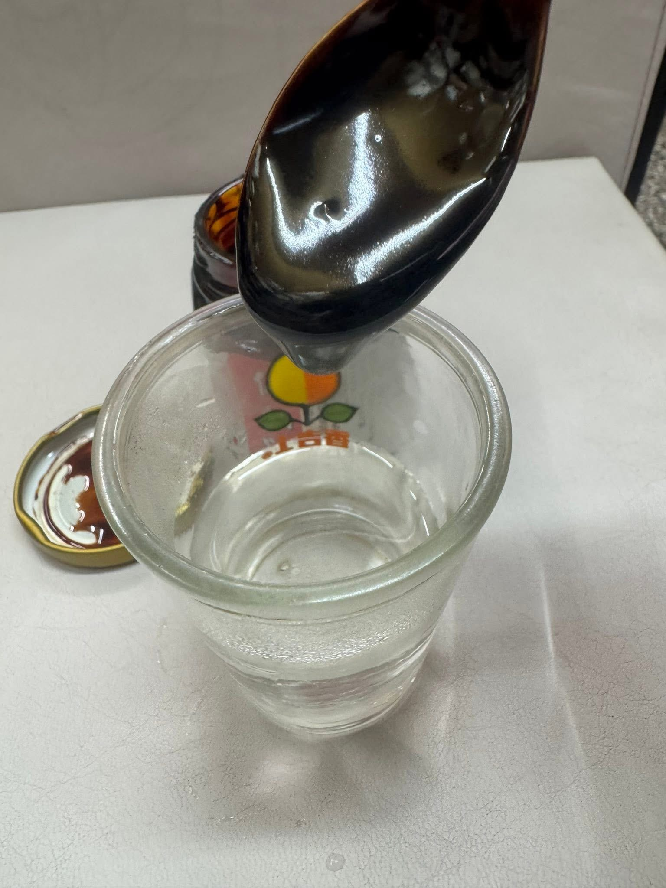
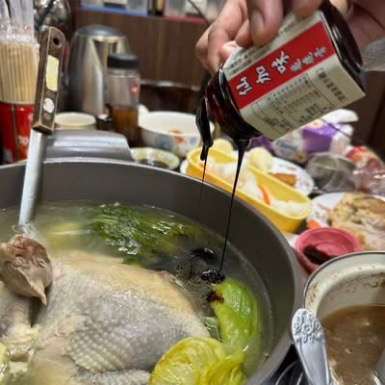

料理搭配
整理龜鹿膏與龜鹿湯塊在日常飲食中的搭配方式， 包含雞湯、排骨湯與其他燉煮料理情境。
龜鹿膏除了直接食用與熱水沖泡，也可依日常飲食習慣搭配溫熱料理。

可直接食用少量龜鹿膏， 作為日常飲食的一部分。

將龜鹿膏加入溫熱水攪拌， 可作為較方便的日常食用方式。

龜鹿膏也可搭配雞湯等溫熱料理， 依個人飲食習慣調整。
龜鹿湯塊主要以燉湯方式使用， 適合雞湯、排骨湯與其他日常燉煮料理。
材料：雞腿、薑片、枸杞、龜鹿湯塊、水。
燉煮時間：約40~60分鐘。
材料：排骨、薑片、紅棗、龜鹿湯塊、水。
燉煮時間：約40分鐘。
材料：雞腿、當歸、枸杞、紅棗、龜鹿湯塊。
燉煮時間：約50分鐘。
材料：牛腩、薑片、龜鹿湯塊、水。
燉煮時間：約60分鐘。
材料：羊肉、薑片、龜鹿湯塊。
燉煮時間：約45分鐘。
材料：白米、薑片、龜鹿膏、水。
慢煮成粥即可。
| 需求 | 建議產品 |
|---|---|
| 直接食用 | 龜鹿膏 |
| 即飲 | 龜鹿飲 |
| 燉湯料理 | 龜鹿湯塊 |
| 熱飲 | 鹿茸粉 / 龜鹿調飲粉 |